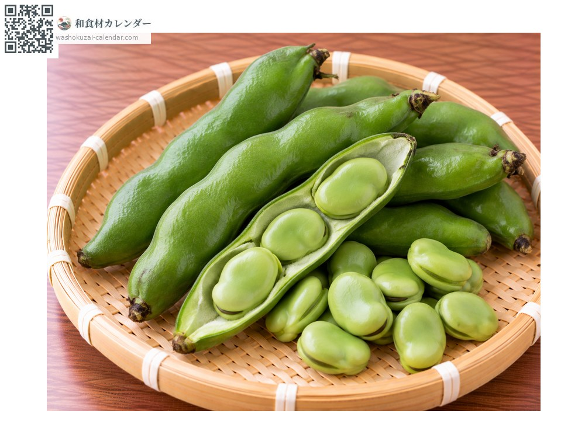
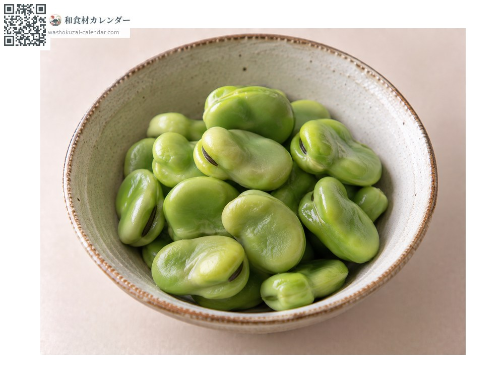
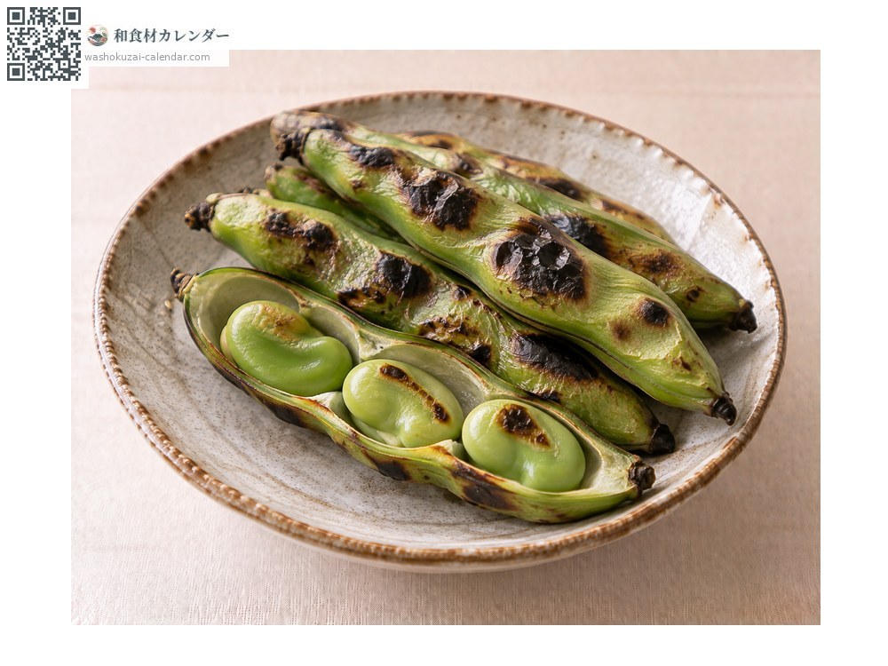
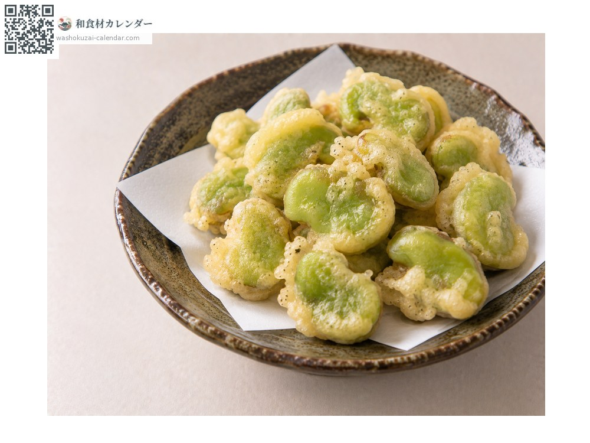
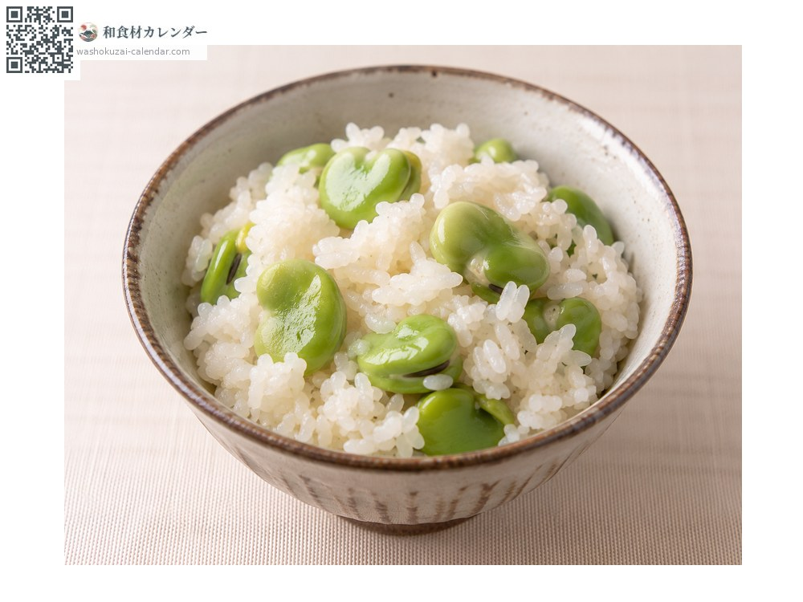

蔬菜
蠶豆
ソラマメ そらまめ soramame
別名soramame
當令時期為4月、5月、6月

當令時期
1月
2月
3月
4月
5月
6月
7月
8月
9月
10月
11月
12月
當令有供應
料理方式

鹽水煮
剝出豆子水煮。

連莢炭烤蠶豆
連莢燒烤，等於是在莢裡蒸熟。

天婦羅
先剝掉薄皮。

豌豆炊飯
在飯煮好後拌入。
挑選方式
豆莢緊繃有光澤、還帶著絨毛。豆粒飽滿大小一致。
保存方式
一剝出豆莢風味立刻下降。連莢冷藏，要吃之前才剝。
主要產地
小知識
有「只有三天好吃」的說法，鮮度決定風味。日文名來自豆莢朝天生長的模樣。